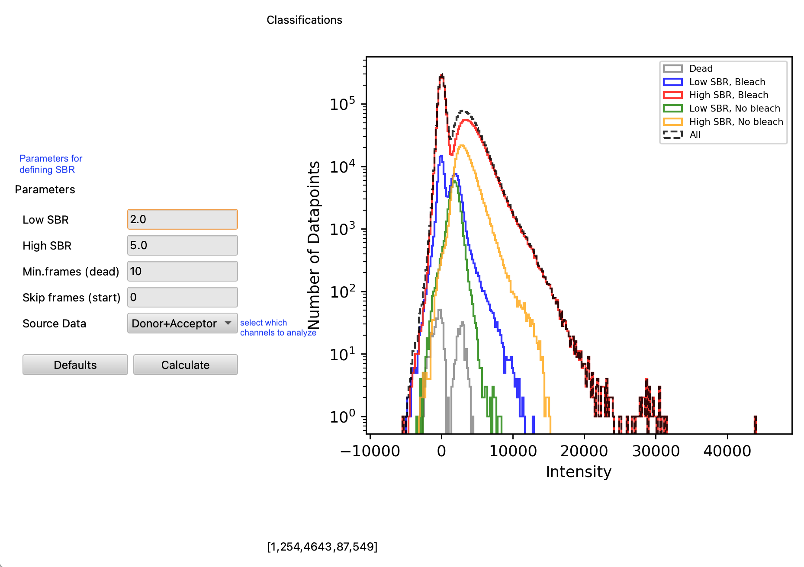
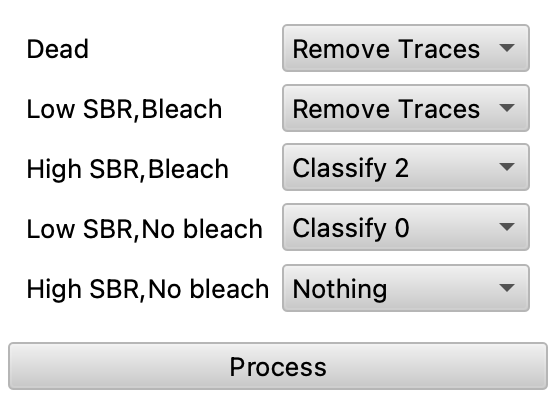

3. Preprocessing
The tMAVEN tools allow users to skip a lot of the painful preprocessing by culling bad traces, reordering traces by viability, and adjusting the presentation of those traces without altering the raw data, all of which makes data sets easier to process. These features can be found under “tools”, and all should be considered before trace picking to optimize the process.
Selection
Before going through traces users should navigate to tools/ selection/order by/cross-correlation to order traces by cross-correlation since good FRET data corresponds to cross correlated jumps of the donor and acceptor emissions. Notice also the options to order by and Turn on/off by class. One of the greatest strengths of tMAVEN is the ease of classifying and viewing traces with the molecule table (refer to section 2). The power to classify traces greatly enhances use of the algorithms discussed in section 4 by the ease with which one may experiment with inclusion of groups of traces. In this case the user is not forced to go through the whole data set repeatedly.
Filter Traces
The Filter Traces command, found under tools, allows the user to filter traces by signal to background ratio (SBR). An algorithm that identifies photobleaching (see section 3: Photobleaching) is used to determine the parameters of background. Filter Traces then sorts traces by SBR and allows the user to classify or cull those groups.

Culling in Filter Traces:

Once calculate is hit and the graph is made, the user can choose what to do with each type of trace (previous figure): ones with low SBR and bleaching, ones with high SBR and bleaching, ones with low SBR and no bleaching, ones with high SBR and no bleaching, and dead traces (traces that bleach before the “minimum frames dead”). Users can repeat the process of filtering and culling until satisfied.
Cull
The Cull function under tools is relatively intuitive and allows users to discard traces according to class or a maximum/minimum data point value. The latter functions should be used only after photobleach detection (see section 3: Photobleaching) lest good traces be culled. The data searched for this function includes only Emissions and not E\(_{FRET}\) values.
Corrections
In this group there are many useful tools such as bleedthrough, gamma, and background correction. As discussed earlier, the actual data is not altered. The program stores a copy of the given data, and the copy is altered by corrections and displayed. For this reason, the corrections should be applied just once for each time a data set is loaded into tMAVEN.
- [Bleedthrough corrections] The default bleedthrough correction is set to 5% and can be adjusted in preferences under
correction.bleedthrough. - [Gamma Corrections] The default gamma correction is set to 1 and can be adjusted in preferences under
correction.gamma. - [Background] Background is determined for each trace by the last x frames, alterable in preferences under
correction.backgroundframes, and subtracted from the red emission value.
Signal Filters
Also found under tools/corrections are various signal filters that can make traces much easier to read. All smooth the graphs according to different methods, making the E\(_{FRET}\) states easier to discern. The filters are found under Tools/Corrections/Signal Filters, and can be removed by resetting corrections under corrections/reset. Reset corrections before switching between signal filters. The width of the filter window’s can also be adjusted in preferences by correction.filterwidth which is automatically set to 2. See figure below for a look at these filters.
- Gaussian
- Wiener
- Median
- 8-pole Bessel
- Chung–Kennedy (Chung and Kennedy 1991)

Photobleaching
By navigating to tools/photobleach/photobleach detection, the user can run an algorithm that checks each trace for photobleaching and cuts the trace there. Alternatively, users can hit P and cut only the trace they are looking at. The algorithm essentially identifies transitions by maximizing the evidence of a Gaussian between sections of data and placing transitions between those. Photobleaches are then transitions to mean 0 states.